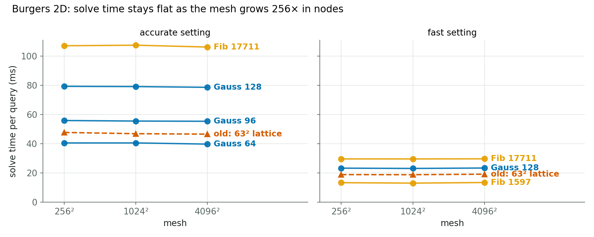
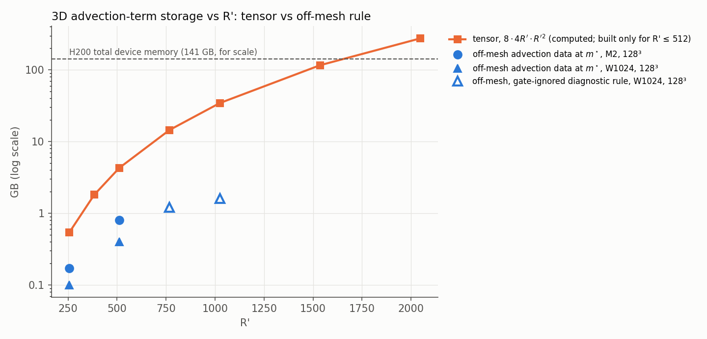
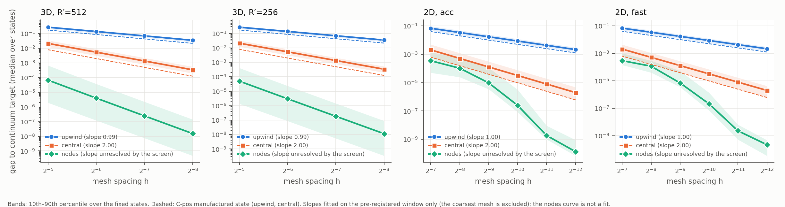
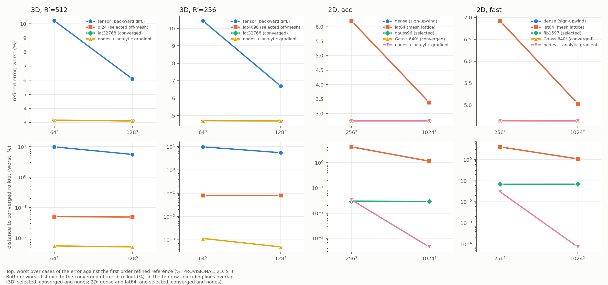
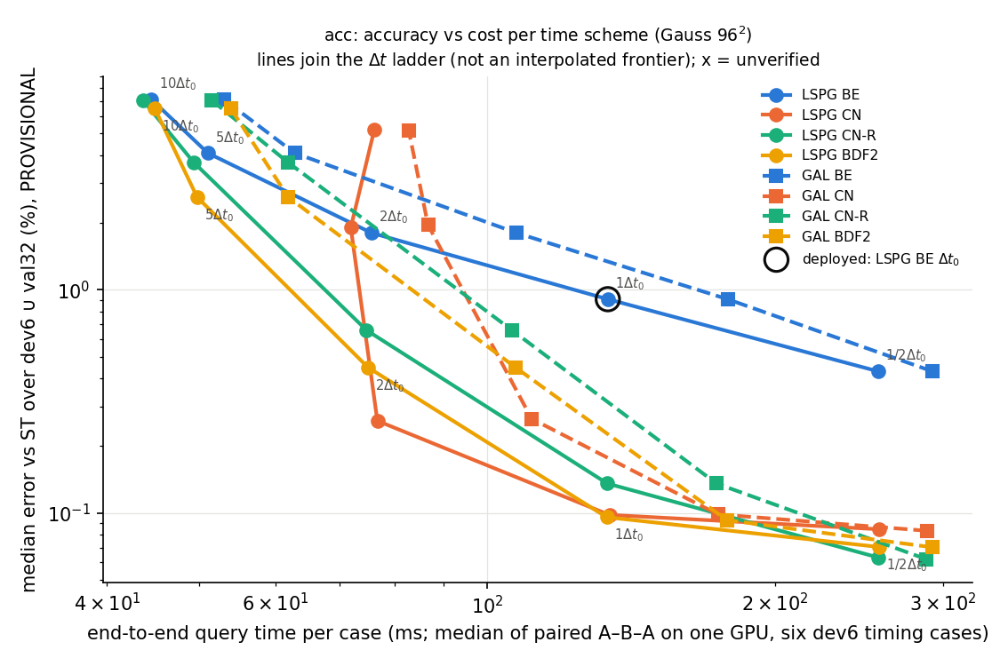
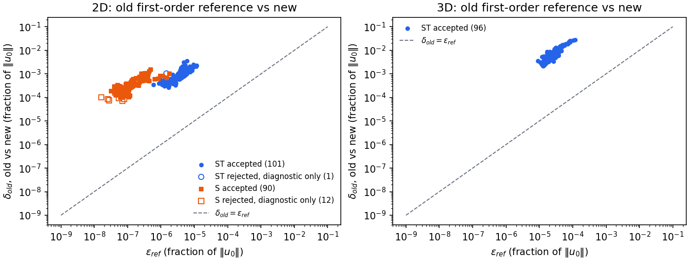
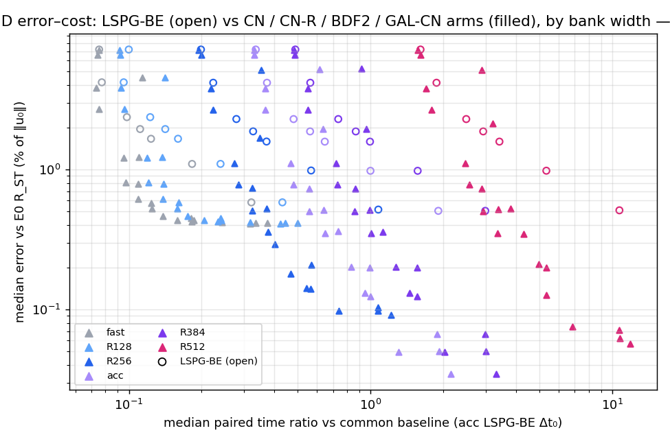
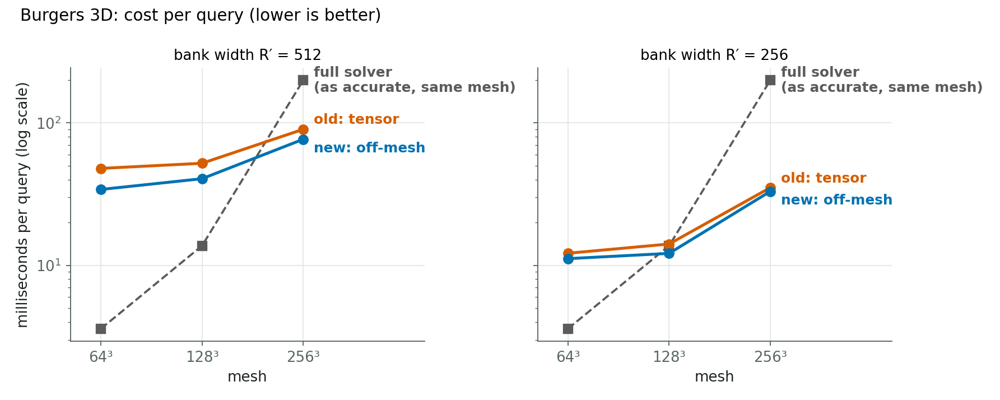

Tunable bank + off-mesh quadrature: progress report
JCP paper campaign · 16 October 2026 · Burgers 2D and 3D
Status of the numbers. Sections 3–7 are scored against the older first-order references and are provisional (3D numbers can move by up to about 2.8 %). Section 8 is scored against the new order-verified second-order references. All results come from validation or held-out cases; the sealed test cohorts have not been opened.
1 · The idea
Our reduced model writes the solution as a weighted mix of learned shapes, u(x) = G(x)c, and solves only for the few weights c. The bank is ordered, so using the first R′ shapes gives a cheaper, rougher model: that is the accuracy-versus-cost dial. The expensive part is the nonlinear term u∇u.
- Before: its integral was computed on the simulation mesh, by a dense sum over all nodes, fitted empirical quadrature, or a precomputed exact tensor. Cost and error depended on the mesh, and the tensor's memory grows with R′².
- Hari's idea: the bank is a smooth formula, so evaluate it and its exact derivative (automatic differentiation) at a few thousand textbook quadrature points: Gauss, rank-1 lattices or Sobol. Three matrices are precomputed once, and each solver step is then
N(c) = Pᵀ [ (B c) ⊙ (D c) ]
with no fitting and the same points at every mesh.
2 · What we did
- Plugged Hari's rules into our model and ran every rule family as a full Burgers solve in 2D (256²–4096²) and 3D (64³–256³): Gauss, Fibonacci/CBC/Korobov lattices, Sobol, Smolyak and the flux form, against the old mesh methods (dense sum, mesh lattice, exact tensor). Oct 1–2
- Found why it works: a mechanism study comparing the exact derivative with mesh differencing. Oct 8
- Fixed the next bottleneck with second-order time stepping (CN-R, BDF2, Galerkin). Oct 8–9
- Tested what else limits accuracy: a wider bank (up to 1024 shapes) and smoother or derivative-trained banks. Oct 8–9
- Built trustworthy references: order-verified second-order solutions with a spectral cross-check, plus sealed held-out cohorts. Oct 13–14
- Combined the winners, second-order stepping with the wide bank, and scored them against the new references, with a per-case error budget. Oct 13–15
- Now running: 3D speed, with a one-pass solver at large steps, a narrower bank, batching, and a large-mesh comparison against a spectral solver. in progress
Every step was pre-registered and adversarially checked by an independent reviewer (Codex) before it ran.
3 · Accuracy no longer depends on the mesh

How to read this plot
Mesh size goes across, from coarse to fine; worst error goes up, and lower is better. Orange is the old exact-tensor method, blue is Hari's off-mesh rule, and grey dashed is the best full simulation at that mesh.
Takeaway: the old method improves only as the mesh refines (10.5 → 6.1 → 3.9 %) because it inherits the mesh's error. Off-mesh is flat at 2.83 % and beats the full simulation on the coarse meshes.

The same in 2D: flat at 2.6 % (accurate setting) and 4.4 % (fast setting), against 5.6–6.3 % for the mesh methods on the coarse mesh.
4 · Cost and memory don't depend on the mesh either

How to read this plot
Every line is horizontal: a 256× larger mesh costs no extra time. Rules with more points sit higher, but mesh size never matters.

Takeaway: the old tensor needs 4.3 GB at width 512 and 34 GB at 1024, and stops fitting past about 1,600. Off-mesh stays at 0.1–1.6 GB, which is what makes wide banks possible.
5 · Which quadrature rules work


Ranking: lattices and Gauss converge fastest. The lattice is about 5–10× better than Gauss at equal points in 3D, and Gauss is best per point in 2D. Sobol needs about 4× more points. Halton is weaker than Sobol. Smolyak fails at 2–3D for these oscillatory integrands. The three 3D panels look identical: the rules don't care about the mesh.
6 · Every rule as a full Burgers solve: accuracy vs speed
3D, held-out cases (64), 512-wide bank. Error is worst / typical; for off-mesh rules it is the same at every mesh. The speed-up is the time of the cheapest full simulation that is at least as accurate, divided by our time, in the same job on the same GPU. Below 1× means slower. The "finer reference" column requires the full simulation to match our accuracy against the finer reference.
| Method | Points | Error | 64³ | 128³ | 256³ | 256³, finer ref. | ms at 256³ |
|---|---|---|---|---|---|---|---|
| Old: exact tensor (mesh) | — | 10.5 → 6.1 → 3.9 % | 0.16× | 0.53× | 2.2× | — | 90 |
| Lattice | 4,096 | 2.8 / 1.1 % | 0.18× | 0.54× | 3.1× | 7.8× | 63 |
| Lattice | 16,384 | 2.8 / 1.1 % | 0.09× | 0.31× | 2.5× | 6.1× | 81 |
| Korobov lattice | 16,381 | 2.8 / 1.1 % | 0.09× | 0.29× | 2.4× | 6.0× | 83 |
| Gauss 16³ | 4,096 | 4.3 / 1.2 % | 0.18× | 0.56× | 3.2× | — | 62 |
| Gauss 24³ (deployed) | 13,824 | 2.8 / 1.1 % | 0.11× | 0.34× | 2.6× | 6.4× | 77 |
| Gauss 32³ | 32,768 | 2.8 / 1.1 % | 0.06× | 0.20× | 1.9× | 4.7× | 105 |
| Sobol | 16,384 | 3.3 / 1.2 % | 0.10× | 0.32× | 2.5× | — | 79 |
| Lattice (too few points) | 256 | fails (37.2 / 12.8 %) | — | — | — | — | 58 |
| Smolyak sparse grid | 2,559 | fails (41.5 / 23.3 %) | — | — | — | — | 64 |
2D, held-out cases (64), accurate setting. Worst error at 256² / 1024² / 4096²; speed-up at 4096² against the cheapest equally accurate full simulation. These ratios were worked out from the study's timing table, not taken from a matched panel.
| Method | Points | Worst error | Speed-up at 4096² |
|---|---|---|---|
| Full simulation (reference point) | — | 5.5 / 2.9 / 2.4 % | 1× |
| Old: dense mesh sum | all nodes | 5.6 / 3.3 / 1.6 % | — |
| Old: 63² mesh lattice | 3,969 | 5.6 / 3.3 / 1.6 % | 11× |
| Gauss 64² | 4,096 | 2.6 / 2.6 / 1.6 % | 13× |
| Gauss 96² (deployed) | 9,216 | 2.6 / 2.6 / 1.6 % | flat solve, about 55 ms |
| Gauss 128² | 16,384 | 2.6 / 2.6 / 1.6 % | 7.4× |
| Fibonacci lattice | 6,765 | 2.6 / 2.6 / 1.6 % | 10× |
| Fibonacci lattice | 17,711 | 2.6 / 2.6 / 1.6 % | 5.7× |
| Sobol | 4,096 | 2.8 / 2.8 / 1.6 % | not timed |
| Gauss 32² (too few points) | 1,024 | fails (9.0 / 8.8 / 2.7 %) | — |
Takeaway: every working rule gives the same accuracy, so the choice of rule hardly matters once it passes the bar. Speed depends on mesh size: slower on small meshes, about even in the middle, and clearly faster on large ones. That means 2–3× at 256³ (up to 7.8× against the finer reference) and 6–32× at 4096² in 2D. The fast 2D setting reaches 20–32× at 4096². Not yet run as full solves: Halton and Monte Carlo.
7 · Why it works: the exact derivative

How to read this plot
Blue is first-order upwind differencing and falls with slope 1. Orange is second-order central differencing and falls with slope 2. Green is mesh nodes used with the exact derivative, thousands of times smaller.

Takeaway: the old error was the mesh's own derivative approximation, shrinking exactly at the rate theory predicts. Using the exact derivative removes it, even on mesh nodes. Hari's points make that cheap: about 14k points instead of 250k–2M nodes.
Then time stepping was the bottleneck

How to read this plot
Bottom-left is best. The points along a line are different time-step sizes.
At equal cost, the second-order schemes (CN-R, BDF2) have about 9× lower typical error than backward Euler. Making the bank wider or smoother changed little until this was fixed.
8 · Where we are now, against the new order-verified references
We built second-order reference solutions and verified their order case by case. 3D passes every case, with observed order 1.99–2.02. 2D passes 191 of 204 cases; the other 13 are flagged and not ranked. A spectral solver agrees on 8 of 8 cross-check cases in each dimension. The old references were off by up to 2.8 % in 3D and 0.35 % in 2D.

| Second-order stepping with the wide bank | Before (backward Euler) | Now, same cost |
|---|---|---|
| 2D typical error (accurate setting) | 0.98 % | 0.20 % |
| 2D worst error (accurate setting) | 3.0 % | 1.8 % |
| 2D speed-up against a full simulation second order in time, at equal accuracy | ≈4× | ≈14× |
| 3D typical error (1024-wide bank) | 1.53 % | 0.12 % |
| 3D worst error (selected arms) | still 4.4–6.7 %, an open problem | |

Takeaway: every old setting has a new setting that is both cheaper and more accurate, and the width dial still works. In 2D, wider banks pay off up to 256–384 shapes; in 3D, 512 → 768 → 1024 keeps improving.
9 · The honest limit: 3D speed

We win on speed only on large meshes (2.6× at 256³). In 3D, second-order stepping bought accuracy, not speed: at equal accuracy it is only 4–15 % faster. Early runs that have not yet been audited show a spectral solver beating us clearly at 64³ (0.04 % typical error in about 4 ms). The 3D speed lane is now testing a one-pass solver, narrower banks, batching, and comparisons against spectral at 128³–384³.
10 · Next steps
- Finish the 3D speed lane, including the large-mesh comparison against spectral and the full-simulation ladder.
- Standard reduced-model baselines: POD with DEIM, ECSW and GNAT, plus fitted quadrature on our bank.
- Re-score the rule comparison (section 6) against the new references, and add Halton and Monte Carlo as full solves.
- A harder example where spectral solvers struggle: non-box geometry, sharp fronts, a non-polynomial nonlinearity.
- Then open the sealed test cohorts for the final paper numbers.
Corrections made along the way, kept on record:
- An early 1.43 % 3D preview became 3.4 % on the full set.
- The old-reference error was underestimated: it is up to 2.8 %, not 1.7–2.3 %.
- The 3D rule for the wide banks was chosen after seeing data, and is labelled post hoc.
- In 2D, one cross-check rule was changed after seeing data; both verdicts are reported.
Glossary
- Bank
- The trained set of smooth shapes the solution is built from; R′ = how many are used.
- Off-mesh quadrature
- Computing the nonlinear integral at chosen points, not at mesh nodes (Hari's idea).
- Gauss rule
- The classic best points per axis, repeated on a grid (n³ points in 3D).
- Lattice (Fibonacci, CBC, Korobov)
- An evenly tilted point grid with equal weights; any point count; a random shift gives error bars.
- Sobol, Halton
- Quasi-random space-filling sequences.
- Smolyak
- A sparse grid built for high dimensions; poor for our 2–3D oscillatory integrals.
- ρ
- Error of the nonlinear integral relative to its size; the acceptance bar is 0.116.
- Worst / typical error
- Largest and median error over the cases, as % of the initial field.
- Speed-up
- Time of the cheapest full simulation at least as accurate, divided by our time; same GPU and job.
- First- vs second-order references
- "Truth" solutions; first-order ones carry up to 2.8 % error; second-order ones are order-verified and accurate to about 0.003 % in 3D.
- Backward Euler, CN-R, BDF2
- Time-stepping schemes; backward Euler is first order, the others are second order.
- Spectral solver
- A full simulation using global Fourier or sine modes; very efficient for smooth problems in a box.
- Provisional
- Scored against the old first-order references; will be re-scored.
Sources: lane reports on branches exp/2026-10-01-quadrature-{study,burgers3d}, exp/2026-10-06-jcp-mechanism, exp/2026-10-08-jcp-{time2,wide-bank,smooth-bank}, exp/2026-10-06-jcp-references, exp/2026-10-13-jcp-combined, and the campaign notebook. The 3D table is generated from select-ho.json by make_page.py.